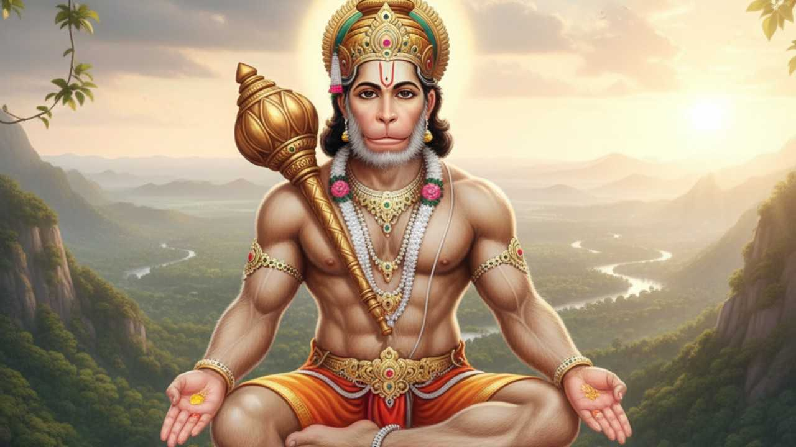

ドーハ
シュリー・グルの蓮華の御足の塵で、私の心の鏡を清めます。
四つの人生の目的を与えてくださる、ラグヴァルの清らかな栄光を私は語ります。
自分を知恵のない者と知り、私は風神の息子ハヌマーンを思い出します。
私に力、知恵、知識を与え、苦しみと心の迷いを取り除いてください。
チャウパーイー
知識と美徳の海であるハヌマーン神に勝利あれ。
三界を照らす猿王に勝利あれ。
ラーマ神の使者、比類なき力の住処よ。
アンジャニーの息子、風神の子として知られるお方よ。
偉大なる勇者、強大なるヴァジュランギーよ。
悪しき知恵を取り除き、善き知恵を与える友よ。
黄金のような身体で、美しい衣装をまとわれています。
耳にはイヤリングをつけ、巻き毛が美しく輝いています。
手には雷の武器と旗を持ち、
肩には聖なるムーンジャ草の糸を身につけています。
シャンカラ神の息子、ケーサリーの子よ。
その輝きと偉大な威光は、全世界から崇められています。
学識があり、徳に満ち、とても賢く、機知に富んでいます。
ラーマ神の仕事を成し遂げることを常に望んでいます。
主君の物語を聞くことを愛し、
ラーマ、ラクシュマナ、シーターを心の中に住まわせています。
小さな姿になってシーター妃の前に姿を現し、
巨大で恐ろしい姿となってランカーを焼き払いました。
恐るべき姿となって悪魔たちを滅ぼし、
ラーマチャンドラ神の仕事を成し遂げました。
サンジーヴァニーの薬草を運び、ラクシュマナの命を救い、
ラグヴィールは喜び、あなたを胸に抱きしめました。
ラグパティはあなたを大いに称賛し、
「あなたは私にとって弟バラタと同じほど大切だ」と言いました。
千の口を持つ者でさえ、あなたの栄光を歌い続けるでしょう。
そう言ってシュリーパティはあなたを抱きしめました。
サナカなどの聖仙、ブラフマー神などの賢者、
ナーラダ、サラスワティー、そしてナーガの王もあなたを称えます。
ヤマ、クベーラ、四方の守護神たちも、
詩人や学者たちも、あなたの栄光を完全には語ることができません。
あなたはスグリーヴァに大きな恩恵を与え、
ラーマ神と引き合わせ、王位を授けました。
ヴィビーシャナはあなたの助言を受け入れ、
ランカーの王となったことは、世界中に知られています。
太陽は何千ヨージャナも遠くにありましたが、
あなたはそれを甘い果物だと思って飲み込みました。
ラーマ神の指輪を口にくわえ、
海を飛び越えたことは、驚くべきことではありません。
この世界にあるどれほど困難な仕事であっても、
あなたの恩恵によって容易になります。
ラーマ神の門をあなたが守っているので、
あなたの許可なしには誰も中へ入ることができません。
あなたの庇護を受ける者は、すべての幸福を得ます。
あなたが守ってくださるので、誰も恐れる必要はありません。
あなた自身の偉大な力を自ら抑えることができます。
あなたの雄叫びに三界さえも震えます。
偉大なるハヌマーンの御名を唱えると、
幽霊や悪霊は近づくことができません。
偉大なる勇者ハヌマーンの名を絶えず唱えることで、
病は消え、すべての苦痛が取り除かれます。
心、行動、言葉を通してあなたを瞑想する者を、
ハヌマーン神はあらゆる困難から救ってくださいます。
ラーマ神はすべての人の上に立つ偉大な苦行者であり王です。
あなたはその御業をすべて成し遂げます。
誰かが心に願いを抱いてあなたに祈るなら、
その人は計り知れない人生の恵みを得るでしょう。
四つの時代を通じて、あなたの威光は輝いています。
その栄光は世界を明るく照らし、広く知られています。
あなたは聖者や修行者を守るお方であり、
悪魔を滅ぼす、ラーマ神に愛されるお方です。
あなたは八つの超能力と九つの宝を与えるお方。
ジャナキー母神からこの恩恵を授けられました。
あなたのもとにはラーマの神聖な霊薬があります。
常にラグパティのしもべとして仕えてください。
あなたを礼拝することで、人はラーマ神を得ることができ、
幾度もの人生における苦しみを忘れることができます。
人生の終わりにはラグヴァルの都へ行き、
そこで生まれ変わると、ハリ神の信 भक्तとして知られるでしょう。
他の神々に心を向ける必要はありません。
ハヌマーン神を礼拝することで、あらゆる幸福を得ることができます。
ハヌマーン神の力強い御名を思い出す者は、
困難を乗り越え、すべての苦痛から解放されます。
勝利あれ、勝利あれ、偉大なるハヌマーン神に勝利あれ。
グルのように慈悲をお与えください。
これを百回唱える者は、
束縛から解放され、大いなる幸福を得ます。
このハヌマーン・チャーリーサーを読む者は、
成就を得るでしょう。これをガウリー神が証明しています。
トゥルシーダースは永遠にハリ神のしもべです。
主よ、どうかあなたの御住まいを私の心に築いてください。
ドーハ
風神の息子よ、困難を取り除くお方、吉祥なる御姿よ。
ラーマ、ラクシュマナ、シーターとともに、私の心にお住まいください。
॥ 終わり ॥
こちらもお読みください： バジュラン・バーン
ハヌマーン神は、アンジャニーの息子、風神の息子、バジュランバリー、サンカトモーチャンなど、 多くの名前で知られています。ハヌマーン神はシュリ・ラーマ神の偉大な भक्तであり、 忠誠心、力、謙虚さの象徴とされています。 ハヌマーン・チャーリーサーはトゥルシーダースによって16世紀にアワディー語で書かれたとされています。 ハヌマーン・チャーリーサーは、ハヌマーン神に捧げられた信仰の讃歌です。
詩人トゥルシーダースは、ハヌマーン・チャーリーサーのほかにも、 『ラームチャリットマーナス』、『ハヌマーン・バーフク』、『カヴィターヴァリー』、 『ギーターヴァリー』などを著しました。 トゥルシーダースはラーマ神の熱心な信 भक्तであり、人々の間に信仰を広めるために 多くの有名な聖典や文学作品を残しました。 伝承によれば、トゥルシーダースはヴァーラーナシーのサンカトモーチャン・ハヌマーン寺院で ハヌマーン・チャーリーサーを作ったとされています。 チャーリーサーはシュリ・ハヌマーン神の栄光、力、信仰、美徳を讃えるものです。 「チャーリーサー」という言葉は「チャーリース（40）」に由来し、 ヒンディー語で40を意味します。これは、冒頭と最後のドーハを除いて、 ハヌマーン・チャーリーサーに40のチャウパーイーが含まれているためです。
ハヌマーン・チャーリーサーを唱えることによって、病、困難、恐怖、 ネガティブな力などが取り除かれると信じられています。 信仰と श्रद्धाをもって定期的にハヌマーン神を礼拝する人には、 勇気、自信、成功がもたらされると言われています。 特に火曜日と土曜日にハヌマーン・チャーリーサーを唱えることは、 शुभ（吉祥）とされています。
ハヌマーン・チャーリーサーはゴースワーミー・トゥルシーダースによって書かれました。
ハヌマーン・チャーリーサーには40の詩節と40のチャウパーイーがあります。
幼少期のハヌマーン神の名前はマールティでした。
5つの化身があります。
ナラシンハの顔、ガルーダの顔、ヴァラーハの顔、馬の顔、 そしてハヌマーンの顔（猿の顔）です。